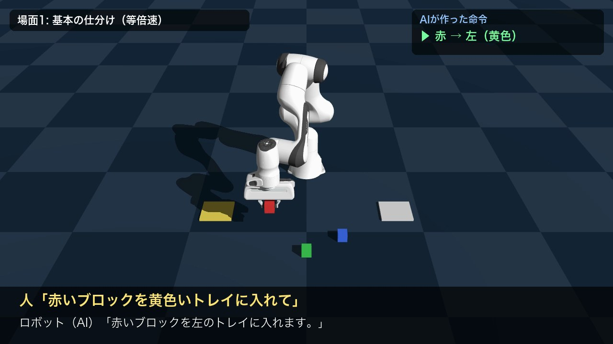
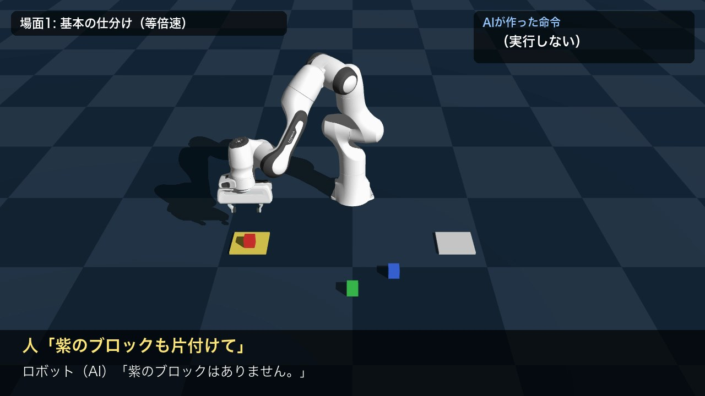
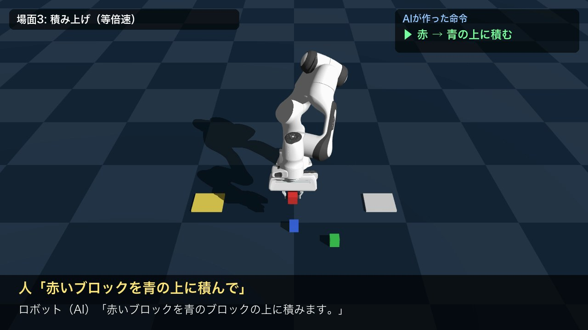
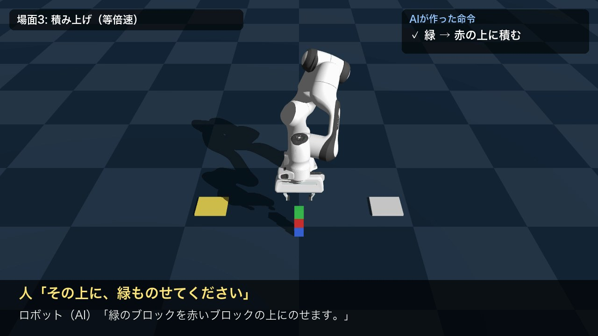

ことばで指示する仕分けロボット
話しかけると、ローカルのAIが考えて声で返事をし、ロボットアームが色ブロックを仕分け・積み上げる
1. 概要と目的
ロボットに作業を頼むとき、現場の人がプログラムを書いたり座標を指定したりするのは大変です。
そこで本課題では、「赤いブロックを青の上に積んで」のような普段の言葉で話しかけるだけで、ロボットが返事をして動く仕組みを作りました。
物流倉庫での荷物の仕分けや、家庭での片付けを手伝うロボットを、小さな形で再現することを目指しています。
AIの役割は、あいまいな日本語の指示を、ロボットが実行できる正確な命令に「翻訳」することです。
ロボットは何をするつもりかを声で返事してから動くため、人は動き出す前にロボットの理解が正しいかを確かめられます。
言語モデルはクラウドではなく Mac上でローカルに動かしており、インターネット接続やAPIキーがなくても動作します。
2. システム構成
① 日本語の指示「その上に、
緑ものせて」
▶
② 言語モデル（AI）qwen2.5:3b
指示を命令に変換
▶
③ 命令（JSON）緑 → 赤の上
▶
④ 声で返事「緑のブロックを
赤の上にのせます」
▶
⑤ IK で動作つかむ→運ぶ
→置く／積む
| ファイル | 役割 |
|---|
ai_planner.py | 指示文と現在の状況（まだ仕分けていないブロック、積み上げのいちばん上のブロック）を言語モデルに渡し、命令（JSON）と返事の文を受け取る |
robot.py | シーン（アーム・色ブロック3個・トレイ2枚・カメラ）の作成と、トレイへの仕分け・ブロックの積み上げ動作 |
make_video.py | 3つの場面を録画し、指示と返事を音声にして、字幕・説明・OP/EDとともに提出用の動画にまとめる |
test_planner.py | いろいろな言い回しで、AIの変換が正しいかを確かめるテスト |
AIの部分：指示を命令に変換する
言語モデルには、使えるブロックと置き場所、ルール、例、現在の状況を伝えたうえで、次の形のJSONだけを出力させます。
置き場所（place）にはトレイ（left / right）か、ほかのブロックの色（その上に積む）を指定します。
入力: まだ仕分けていないブロック: green, blue ／ いちばん上のブロック: red
指示「その上に、緑ものせてください」
出力: {"actions": [{"cube": "green", "place": "red"}],
"reply": "緑のブロックを赤いブロックの上にのせます。"}
ロボットの部分：つかむ→運ぶ→置く／積む
命令を受け取ると、ブロックの現在位置を読み取り、手先を「真上 → つかむ高さ → 持ち上げ → 置く場所の上 → 置く高さ」と順に動かします。
各目標位置への関節角度は Genesis の逆運動学（IK）で計算し、動き始めと終わりがゆっくりになるように補間して滑らかに動かしています。
積み上げでは、土台のブロックの今の高さから置く高さを計算し、より遅い速度で下ろします。最後に、置けたかどうかを自動で判定します。
3. 工夫した点
- ロボットが声で返事をしてから動く：指示は人らしい声（Kyoko）、ロボットの返事は機械らしい声（Rocko）で読み上げ、「人が話す → ロボットが返事をする → 動く」という会話の流れにしました。字幕の表示と声の再生は、録画時の記録をもとに同じタイミングに合わせています。
- 積み上げに対応：命令の「置き場所」に、トレイだけでなくブロックを指定できるようにしました。つかむ高さ・置く高さを毎回ブロックの今の高さから計算するため、積まれたブロックもつかめます。3段のタワーを作れることを確認しました。
- つかむ力の調整と、つかんだときの「ずれ」の補正：つかむ力が 1N だと運ぶ途中にブロックが指の間で回って落ちることがあり、8N にすると今度は積む位置がずれて上のブロックが落ちました。3N に調整したうえで、持ち上げた直後にブロックが手の中心からどれだけずれているかを測り、その分だけ置く位置をずらす補正を加えました。
- 小さなモデルが苦手な推理はプログラムが受け持つ：「その上に」が何を指すかを、3B の小さなモデルは動作の履歴から正しく推理できませんでした。そこで「いちばん上のブロック」をプログラムで計算してAIに伝える方式にし、AIは言葉の理解に集中させました。「残りは全部」も同じ考え方で、まだ仕分けていないブロックを伝えています。
- AIが「できない命令」を出せない・言わない：Ollama の structured outputs 機能で出力の形（JSON Schema）を固定し、存在しない色や置き場所は選べないようにしました。プログラム側でも再チェックし、「赤を赤の上に」のような命令を取り除いたときは、返事も「同じブロックの上には積めません。」に差し替えて、声と動作が食い違わないようにしました。
- 無い物には動かずに理由を返す：「紫のブロックも片付けて」には、動かずに声で「紫のブロックはありません。」と返します。
- 左右を「指示する人」の目線で定義：ロボットの正面に立って指示する人から見た左右に定義し、動画の画面の左右とも一致させました。
- 判定を厳しく：積み上げの成功判定では、上に載っているかに加えて、土台のブロックが押されて動いていないかも確かめます（この判定を入れたことで、見かけ上「成功」だった失敗に気づけました）。
4. 結果
| 評価 | 結果 |
|---|
| 指示の変換テスト（言い回しを変えた13通り） | 13 / 13 正解（仕分け8通り＋積み上げ5通り。「青の上に緑を重ねてください」「赤を赤の上に積んで」（＝できないと返す）など）。1回の変換は約1〜3秒 |
| デモ動画（3場面・7つの指示） | 8 / 8 回成功（うち積み上げ 2 / 2 回、3段のタワー）。紫のブロックの指示には動かずに声で返答 |
| 手先の位置の精度（IK） | 目標との誤差は最大 7.6 mm（4 cm のブロックをつかむには十分） |
| 1回の動作にかかる時間 | シミュレーション内で約 9 秒（話す時間を除く） |

図1 「赤いブロックを黄色いトレイに入れて」：返事をしてから赤を運ぶ

図2 「紫のブロックも片付けて」：動かずに声で「ありません」と返答

図3 「赤いブロックを青の上に積んで」：赤を青の上へ運ぶ

図4 「その上に、緑ものせてください」：3段のタワーが完成
5. 苦労した点と対処
- 環境構築：以前入れていた Anaconda が Intel Mac 用で、M1 Mac では起動しませんでした。M1 に対応した Python 管理ツール uv で環境を作り直しました。ROS2 + Gazebo は M1 Mac では仮想環境が必要になるため、pip でそのまま入る Genesis を選びました。
- ライブラリの変更：Genesis の最新版では、録画の保存方法など、参考にした記事と書き方が変わっている部分がありました。関数の定義を直接調べて対応しました。
- AIの返事に英語が混ざる：「残りのgreenとblue」のように英語が混ざることがあったため、「色は日本語で書く」ルールを追加し、渡す情報にも日本語名を付けました。声で読み上げるため、特に重要でした。
- 「その上」の誤解と、つかみ方の不安定さ：工夫点 3・4 のとおり、録画で失敗を見つけるたびに映像を1コマずつ確認して原因を調べ、対処しました。
6. 限界と今後の展望
- ブロックの位置を「見て」いない：現在はシミュレータから位置を直接読み取っています。カメラ画像から物体検出や視覚言語モデルで位置と色を認識できれば、実機にも近づきます。
- 本当に話しかけてはいない：今回の指示の音声は読み上げ機能で作ったものです。音声認識（Whisper など）を組み合わせれば、マイクに話しかけて操作できます。
- 小さな言語モデルの限界：「いちばん上に青を積んで」のような言い回しでは、まだ動かすブロックと土台を取り違えることがあります。例やテストを増やして弱点を調べること、より大きなモデルと比べることが次の課題です。
- 実機での検証：SO-101 などの安価なロボットアームで同じ仕組みを試したいです。
※ 開発にあたっては、環境構築やコードの作成にAIアシスタント（Claude Code）の支援を受けました。設計の判断・動作の確認・動画の構成は、自分で確かめながら進めています。